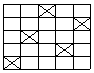

세탁기능사 (2008-03-30 기출문제)
1과목: 세정이론
1. 보일러 사용 시 불완전연소에 의하여 발생하는 성분으로 옳은 것은?
- 아황산가스, 일산화탄소, 그을음과 분진
- 일산화탄소, 과산화수소, 그을음과 분진
- 아황산가스, 일산화탄소, 차아염소산나트륨
- 아황산가스, 그을음과 분진, 퍼클로로에틸렌
(정답률: 64%)

2. 다음 중 클리닝 공정 순서가 옳은 것은?
- 접수점검→마킹→대분류→포켓청소→세정
- 접수점검→포켓청소→대분류→세정→마킹
- 접수점검→세정→마킹→대분류→포켓청소
- 접수점검→대분류→마킹→세정→포켓청소
(정답률: 83%)
3. 계면활성제의 세정작용 중 미셀이 오점을 핵으로 하여 안정화되는 작용은?
- 분산 작용
- 보호 작용
- 흡착 작용
- 침투 작용
(정답률: 58%)
4. 다음 중 기술진단의 포인트로 틀린 것은?
- 장식 단추
- 얼룩 및 가공표시 확인
- 형태의 변형 유무
- 햇빛, 가스, 오점 제거에 의한 변퇴색
(정답률: 68%)
5. 유기성 용제가 수분으로 인하여 유화와 분리가 일어날 때 의류에 나타나는 현상과 관계가 없는 것은?
- 재오염
- 의류의 수축
- 의류의 변형
- 표백
(정답률: 65%)
6. 다음 중 과즙의 오점 분류는?
- 유용성
- 수용성
- 표백성
- 불용성
(정답률: 81%)
7. 섬유의 재가공 시 섬유를 부드럽게 하여 착용감을 높이려는 방법은?
- 방추 가공
- 유연 가공
- 방오 가공
- 표백 가공
(정답률: 79%)
8. 계면활성제의 분자구조는?
- 소수성 부분과 친수성 부분으로 되어 있다.
- 소수성 부분으로만 되어 있다.
- 친수성 부분으로만 되어 있다.
- 소수성 부분과 친유성 부분으로 되어 있다.
(정답률: 57%)
9. 용제별 드라이클리닝 처리방법 중 세정의 온도는 20~30℃가 적당하며 35℃ 이상은 화재의 위험이 있어 방폭설비를 갖추어야 하는 것은?
- 석유계
- 퍼클로로에틸렌
- 불소계
- 1.1.1 트리클로로에탄
(정답률: 78%)
10. 다음 관계식 중 옳은 것은?
- 절대압력 = 게이지압력 - 대기압
- 게이지압력 = 절대압력 - 대기압
- 진공압력 = 게이지압력＋대기압
- 대기압 = 게이지압력＋진공압력
(정답률: 59%)
11. 다음 중 드라이클리닝의 세정 방법으로 가장 옳은 것은?
- 물과 섞이지 않는 휘발성 유기용제로서 세정한다.
- 휘발성 유기용제와 이 용제에 세정을 도와주는 세제를 첨가하고, 수용성 오점을 세정하기 위하여 소량의 물을 가한다.
- 휘발성 유기용제와 약간의 물을 가한다.
- 휘발성 유기용제와 세정액만으로 세정한다.
(정답률: 59%)
12. 각종 섬유들을 오점이 잘 제거되는 것부터 순서대로 나열한 것은?
- 양모→나일론→비닐론→아세테이트→면→레이온→마→견
- 나일론→아세테이트→면→마→견→비닐론→레이온→양모
- 마→견→레이온→아세테이트→비닐론→나일론→양모→면
- 비닐론→아세테이트→면→레이온→나일론→양모→마→견
(정답률: 88%)
13. 다음 중 더러움을 제일 많이 타는 섬유는?
- 아세테이트
- 면
- 레이온
- 나일론
(정답률: 79%)
14. 세정액의 청정화에 관한 설명 중 틀린 것은?
- 세정액의 청정화 방법에는 여과방법, 흡착방법, 정류방법 등이 있다.
- 세정액의 청정장치에는 필터, 청정통식, 카트리지식 등이 있다.
- 카트리지식은 여과지와 흡착제가 별도로 되어있고 여과면적이 넓고 흡착제의 양이 많아 오래 사용한다.
- 흡착방법은 탈취, 탈산 등에 뛰어난 흡착력을 가진 흡착제를 사용하여, 세정액을 통과시켜 청정화한다.
(정답률: 60%)
15. 용제의 재오염률 측정결과 원포 반사율이 45, 세정 후 반사율이 43.5일 때 재오염률은?
- 3.03%
- 3.33%
- 2.25%
- 3.92%
(정답률: 69%)
16. 세탁 후 비누를 깨끗이 헹구는 방법으로 옳은 것은?
- 세탁 온도와 같은 물로 헹군다.
- 세탁은 뜨거운 물로, 헹굼은 찬물로 한다.
- 삶은 세탁물을 식히기 위해 찬물로 헹군다.
- 찬물로 세탁하고, 찬물로 헹군다.
(정답률: 68%)
17. 드라이클리닝 용제 중 불소계 용제의 특성으로 틀린 것은?
- 불연성이고, 독성이 약하다.
- 비점이 낮아 저온건조가 되며 섬세한 의류에 적합하다.
- 용해력이 강해 오점 제거가 충분하다.
- 매회 증류가 용이하며 용제관리가 쉽다.
(정답률: 43%)
18. 세탁물의 접수점검 시 진단해야 할 사항과 가장 거리가 먼 것은?
- 카운터에서 고객과 함께 진단하고, 처방지에 주의점을 기입한다.
- 얼룩, 변색, 흠, 형태 변화 등과 클리닝의 대상 여부를 판별한다.
- 세탁기의 본체와 부속품을 체크하고, 세탁방법을 분류한다.
- 얼룩의 종류와 부착시기, 그리고 세탁물에 대한 정보를 알아본다.
(정답률: 64%)
19. 다음 중 와이셔츠 칼라와 소매에 주로 부착되는 오염이 아닌 것은?
- 흙
- 땀
- 공기 중의 먼지
- 표피, 각질 등의 단백질
(정답률: 69%)
20. 다음 중 청정제의 종류가 아닌 것은?
- 활성탄소
- 실리카겔
- 나프탈렌
- 산성백토
(정답률: 76%)
2과목: 기술관리
21. 다음 중 드라이클리닝이 가능한 피복은?
- 고무를 입힌 제품
- 안료로 염색된 제품
- 등유에 오염된 식탁보
- 합성피혁제품
(정답률: 63%)
22. 다음 중 섬유별 세탁방법으로 틀린 것은?
- 직접염료로 염색된 면직물이나 수지 가공된 직물은 알칼리성 세제와 고온 세탁을 하여도 무방하다.
- 양모직물은 세탁 시 알칼리성 수용액에서 흔들게 되면 축융 현상이 일어나므로 각별히 유의하여야 한다.
- 레이온직물은 습윤하면 강도가 크게 저하되므로 세탁 시 큰 힘을 가하지 말아야 한다.
- 합성섬유는 습윤강도가 좋고 내알칼리성이 있기 때문에 세탁방법에 별다른 제한을 받지 아니한다.
(정답률: 50%)
23. 용제, 세제 등을 사용하여 의류, 기타 섬유제품이나 피혁제품 등을 원형에 가깝게 세탁 하는 것은?
- 재오염 방지 처리
- 클리닝
- 얼룩빼기
- 정련 및 표백
(정답률: 78%)
24. 다음 중 다림질 방법으로 틀린 것은?
- 풀 먹인 직물을 너무 고온처리하면 황변될 수 있다.
- 광택을 필요로 하는 옷은 다리미판이 딱딱한 것을 사용하면 효과적이다.
- 모직물은 위에 덮는 헝겊을 대고, 물을 뿌려 다린다.
- 혼방직물은 내열성이 높은 섬유를 기준으로 다린다.
(정답률: 77%)
25. 드라이클리닝의 일반적인 특성에 대한 설명으로 틀린 것은?
- 기름의 얼룩을 잘 제거한다.
- 특수 의류의 진단과 처리기술이 필요하다.
- 용제의 회수장치가 필요하다.
- 빠진 얼룩이 재오염되지 않는다.
(정답률: 53%)
26. 세탁의 마무리 목적을 설명한 것 중 틀린 것은?
- 옷감의 형태를 바로 잡아 원형으로 회복시킨다.
- 디자인 또는 실루엣의 기능을 회복시킨다.
- 스티밍은 수분과 열에 의하여 의복소재에 가소성을 제거한다.
- 살균 및 소독을 한다.
(정답률: 45%)
27. 다음 중 론드리(laundry)의 특징으로 틀린 것은?
- 드라이클리닝이 어려운 의류를 약한 처리의 물세탁으로 고도의 세탁기술과 마무리 기술이 중요하다.
- 세정력이 강하므로 오염의 정도가 심한세탁물의 세탁에 적합하다.
- 처리조건이 강력하여 물품의 변형이나 수축의 사고가 일어나기 쉽다.
- 마무리 처리나 형을 바로 잡기가 어렵다.
(정답률: 44%)
28. 얼룩빼기 방법 및 약품사용에 대한 설명 중 옳은 것은?
- 아세테이트 섬유는 질겨서 어느 약품을 사용해도 손상이 없다.
- 산성 약제로는 과산화수소, 수산, 올레인산등이 있다.
- 알칼리성 얼룩은 알칼리성 약품으로만 뺀다.
- 쇠 녹의 얼룩은 수산으로 제거하고, 암모니아로 헹구어 중화하는 것이 바람직하다.
(정답률: 51%)
29. 세탁물의 종류와 성질에 따라 섬유가 손상되지 않도록 와셔(washer)에서 온수 알칼리제를 섞어 세정하는 작업은?
- 산욕
- 본 빨래
- 드라이클리닝
- 헹굼
(정답률: 55%)
30. 다음 중 유용성 오점을 제거하는 방법으로 가장 부적합한 것은?
- 표백제로 분해하여 제거한다.
- 친유성이 있는 유기용제로 제거한다.
- 계면활성제로 제거한다.
- 알칼리로 제거한다.
(정답률: 42%)
31. 산욕 작용의 효과 중 틀린 것은?
- 천에 남아 있는 알칼리를 중화한다.
- 의류를 살균, 소독한다.
- 더러운 오염을 깨끗이 제거한다.
- 천에 광택을 주고 황변을 방지하고, 산가용성의 얼룩을 제거한다.
(정답률: 43%)
32. 세탁 후 마무리하는 기계가 아닌 것은?
- 만능프레스
- 인체 프레스
- 팬츠 토퍼
- 스파팅 머신
(정답률: 53%)
33. 다림질한 벨벳 바지가 파일이 눕고 번들거리는 현상이 나타나는 원인과 관계없는 것은?
- 다리미의 강한 압력 때문이다.
- 천을 덮고 다리지 않아서이다.
- 바큠(흡입)이 너무 강해서이다.
- 바큠을 끄고 천을 덮고 다려서이다.
(정답률: 53%)
34. 다음 중 탈수할 때의 주의점으로 틀린 것은?
- 세탁물을 탈수기의 중심부에서부터 고르게 채워서 넣는다.
- 정해진 양 이상의 세탁물을 넣지 않는다.
- 덮개보를 씌운 후 뚜껑을 닫는다.
- 유색 세탁물은 다른 옷에 물드는 것에 주의한다.
(정답률: 57%)
35. 용제별 드라이클리닝 처리방법으로 틀린 것은?
- 퍼클로로에틸렌의 세정액 온도가 60℃를 넘지 않도록 하고, 텀블러의 건조온도는 30℃ 전후로 한다.
- 석유계 용제의 경우에는 인화폭발의 위험방지를 위하여 사전에 충분한 배려를 하여야 한다.
- 트리클로로에탄의 경우는 분해방지를 위하여 용제에 물을 첨가하는 것은 피해야 한다.
- 전처리로 필요 이상의 수분이 많게 되면 의류의 수축, 형태변형, 색 번짐 등이 발생하기 쉽다.
(정답률: 59%)
36. 그림과 같은 기호로 표시된 제품의 취급방법은?
- 물세탁을 하지 않는다.
- 물세탁을 낮은 온도에서 한다.
- 물세탁은 하되 세제를 사용하지 않는다.
- 드라이클리닝을 하지 말고 중성세제로 물세탁 한다.
(정답률: 87%)
37. 다음 중 능직으로 제직한 직물이 아닌 것은?
- 서지(serge)
- 개버딘(gaberdine)
- 데 님(denim)
- 옥양목(shirting)
(정답률: 76%)
38. 섬유의 상품 중 원단에 표시하는 품질표시 사항이 아닌 것은?
- 섬유의 조성 또는 혼용률
- 직물의 발수가공 여부
- 직물의 폭
- 직물의 길이 또는 중량
(정답률: 52%)
39. 아마 섬유의 성질 중 틀린 것은?
- 열의 양도체이므로 시원한 감을 준다.
- 내구력이 풍부하고 내세탁성이 우수하다.
- 화학 약품에 대해서는 무명 섬유와 비슷하다.
- 표백제에 의해 쉽게 손상되지 아니한다.
(정답률: 49%)
40. 다음 중 재생섬유인 것은?
- 나일론
- 비스코스레이온
- 폴리아크릴로니트릴
- 폴리에스테르
(정답률: 69%)
3과목: 클리닝대상품
41. 직물의 3원 조직은?
- 평직, 능직(사문직), 주자직(수자직)
- 평직, 능직(사문직), 사직
- 주자직(수자직), 능직(사문직), 익조직
- 평직, 능직(사문직), 평편조직
(정답률: 83%)
42. 직물에 처리하는 샌포라이징(sanforizing) 가공이란 어떤 목적으로 행하는 가공인가?
- 습기나 물, 세탁 등에 의해 직물이 수축되는 것을 방지하기 위하여
- 사용 중 옷감이 구겨지는 것을 방지하기 위하여
- 보관 중 섬유제품이 해충에 의해 손상되는 것을 방지하기 위하여
- 곰팡이의 발생을 방지하기 위하여
(정답률: 54%)
43. 아세테이트 섬유의 염색에 적합한 염료는?
- 산성 염료
- 직접 염료
- 분산 염료
- 배트 염료
(정답률: 74%)
44. 가죽처리 공정에서 회분 빼기에 해당 되는 것은?
- 가죽제품이 깨끗하고 염색이 잘 되게 은면에 남아있는 모근, 지방 또는 상피층의 분해물을 제거하는 것이다.
- 석회에 담그기가 끝난 제품은 알칼리가 높아 가죽재료로 사용하기가 부적당함으로 산, 산성염 등으로 중화시키는 것이다.
- 가죽의 촉감향상을 위하여 털과 표피층의 제거, 불필요한 단백질 제거 지방화 기름 등을 제거하는 것이다.
- 산을 가하여 산성화하여 가죽을 부드럽게 하는 것이다.
(정답률: 48%)
45. 다음의 직물 조직명은?

- 평직
- 능직
- 여직
- 주자직
(정답률: 58%)
46. 온도 85℃ 이상의 뜨거운 물이나 비누액 중에서 천천히 분해되어 섬유의 특성을 잃게 되는 섬유는?
- 비스코스레이온
- 카폭
- 아세테이트셀룰로스
- 폴리에스테르
(정답률: 44%)
47. 직물을 사포로 문질러 털을 일으킨 다음 수지 처리하고, 잔털을 일정한 길이로 잘라 부드러운 촉감과 탄력을 가지게 하는 가공은?
- 리플 가공
- 머서화 가공
- 피치 스킨 가공
- 방추 가공
(정답률: 52%)
48. 면직물에 사용되는 염료 중 일반적으로 염색 견뢰도가 가장 우수한 것은?
- 배트 염료
- 직접 염료
- 산성 염료
- 반응성 염료
(정답률: 33%)
49. 면섬유를 구성하고 있는 주성분은?
- 셀룰로스(cellulose)
- 피브로인 (fibroin)
- 케라틴 (keratin)
- 세리신(sericin)
(정답률: 78%)
50. 명주섬유의 특성 설명 중 옳은 것은?
- 열에 대하여 양털보다는 매우 약하다.
- 다른 섬유에 비해 일광에는 약한 편이다.
- 흡습성이 불량하여 공정수분율은 2% 정도이다.
- 섬유장은 긴편이나 탄성회복률이 매우 불량하다.
(정답률: 48%)
51. 다음 중 부직포의 특성으로 옳은 것은?
- 직물과 파일, 직물과 직물 위에 수지 등을 입혀 특수목적으로 사용되는 직물이다.
- 용도는 실용적인 옷감으로 사용되고 광목, 옥양목, 포플린 등이 있다.
- 함기량이 많으나 내열성, 내구성이 불량하여 주로 심감으로 사용한다.
- 겉모양이 우아하여 부인복에 이용되고 통기성이 좋아 시원한 감을 준다.
(정답률: 49%)
52. 다음 중 아세톤으로 녹일 수 있는 섬유는?
- 폴리에스테르
- 아세테이트
- 비스코스레이온
- 나일론
(정답률: 77%)
53. 가죽에서 표피층 아래 부분으로 원피 두께의 50% 이상을 차지하며 제혁작업 후 최종 까지 남아서 피혁이 되는 중요한 부분은?
- 진피
- 표피
- 피하조직
- 하이드
(정답률: 79%)
54. 면섬유의 물리적, 화학적 성질 설명으로 틀린 것은?
- 수분을 흡수하면 강도와 신도가 증가한다.
- 면섬유의 염색에는 직접염료, 배트염료, 반응성 염료가 주로 사용된다.
- 내열성이 좋아 다림질 온도가 높다.
- 산에는 비교적 강하고, 알칼리에는 약하다.
(정답률: 78%)
55. 고무처럼 자유로이 신축하는 성질을 가진 것으로 스판덱스라고도 부르는 섬유는?
- 폴리에스테르계 섬유
- 폴리우레탄계 섬유
- 폴리아미드계 섬유
- 폴리아크릴로니트릴계 섬유
(정답률: 62%)
4과목: 공중위생법규
56. 세탁업을 개설하려면 시설 및 설비를 갖추어 누구에게 신청하여야 하는가?
- 보건복지가족부장관
- 시장, 도지사
- 시장, 군수, 구청장
- 환경부장관
(정답률: 75%)
57. 세탁업소의 위생관리 의무를 지키지 아니하였을 경우 과태료 금액은?
- 80만 원 이하
- 100만 원 이하
- 200만 원 이하
- 300만 원 이하
(정답률: 69%)
58. 공중위생관리법 시행규칙은 어느 령으로 하는가?
- 대통령령
- 보건복지가족부령
- 환경부령
- 노동부령
(정답률: 51%)
59. 행정기관으로부터 과태료 처분에 불복이 있는 자의 의의제기에 대한 설명으로 옳은 것은?
- 처분의 고지를 받은 날로부터 15일 이내에 처분권자에게 이의를 제기할 수 있다.
- 처분의 고지를 받은 날로부터 30일 이내에 처분권자에게 이의를 제기할 수 있다.
- 관할법원에 재판을 신청하고 처분권자에게 이의를 제기할 수 있다.
- 처분의 고지를 받은 날로부터 60일 이내에 처분권자보다 높은 국무총리에게 이의를 제기할 수 있다.
(정답률: 81%)
60. 공중위생영업자의 연간 위생교육 시간은?
- 4시간
- 6시간
- 8시간
- 12시간
(정답률: 83%)